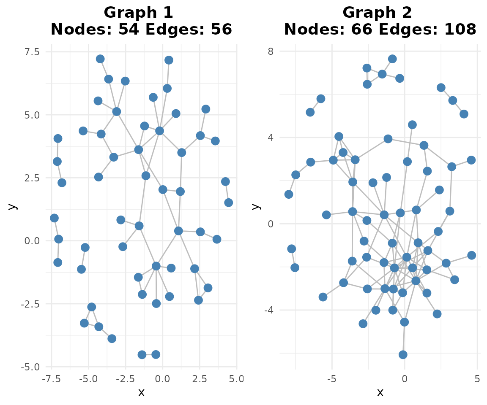
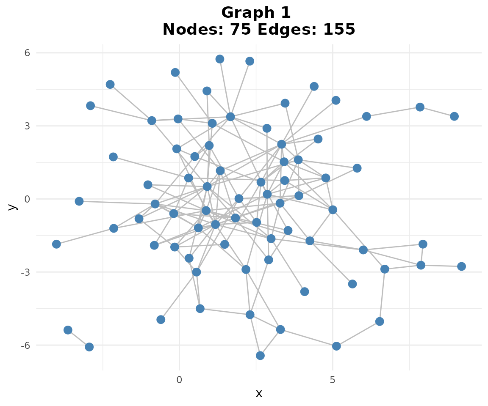
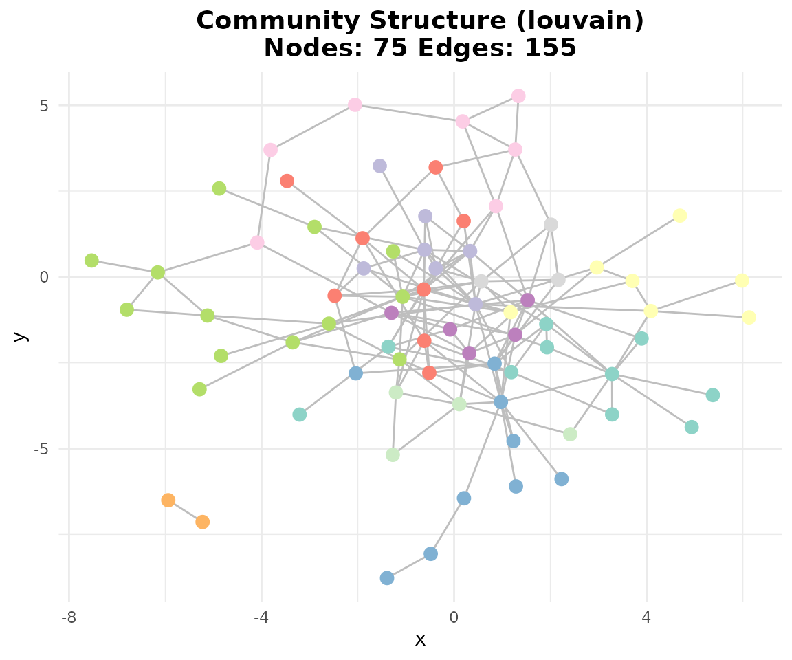

scGraphVerse Case Study: B-cell GRN Reconstruction
Francesco Cecere
Source:vignettes/case_study.Rmd
case_study.RmdIntroduction
This vignette demonstrates the scGraphVerse workflow on a single-cell RNA-seq dataset. We show how to:
- Load and preprocess public PBMC data.
- Infer gene regulatory networks with GENIE3.
- Build consensus networks and detect communities.
- Validate inferred edges using STRINGdb.
1. Dataset and Preprocessing
In this real-data analysis, we’ll work with two public PBMC (Peripheral Blood Mononuclear Cell) datasets from 10X Genomics. Our strategy is to focus specifically on B cells and identify a common set of highly expressed genes across both datasets. This approach allows us to compare regulatory networks between different experimental batches while controlling for cell type and gene selection effects.
Data Processing Workflow: 1. Load two PBMC datasets (3k and 4k cells) from TENxPBMCData 2. Use SingleR for automated cell type annotation 3. Select top 500 most expressed genes in B cells from each dataset 4. Find intersection of expressed genes to ensure comparable gene sets 5. Subset datasets to B cells only with common gene set
This preprocessing ensures we have clean, comparable data for network inference.
# Note: This vignette requires external packages from Suggests
# Install if needed:
# BiocManager::install(c("TENxPBMCData", "scater", "SingleR", "celldex"))
# Helper function to preprocess PBMC data
preprocess_pbmc <- function(pbmc_obj) {
sce <- scater::logNormCounts(pbmc_obj)
symbols_tenx <- SummarizedExperiment::rowData(sce)$Symbol_TENx
valid <- !is.na(symbols_tenx) & symbols_tenx != ""
sce <- sce[valid, ]
rownames(sce) <- make.unique(symbols_tenx[valid])
SummarizedExperiment::assay(sce, "logcounts") <-
as.matrix(SummarizedExperiment::assay(sce, "logcounts"))
colnames(sce) <- paste0("cell_", seq_len(ncol(sce)))
return(sce)
}
# 1. Load and preprocess PBMC data
if (requireNamespace("TENxPBMCData", quietly = TRUE)) {
pbmc_obj <- TENxPBMCData::TENxPBMCData("pbmc3k")
pbmc_obj1 <- TENxPBMCData::TENxPBMCData("pbmc4k")
sce <- preprocess_pbmc(pbmc_obj)
sce1 <- preprocess_pbmc(pbmc_obj1)
# 2. Cell type annotation
if (requireNamespace("celldex", quietly = TRUE) &&
requireNamespace("SingleR", quietly = TRUE)) {
ref <- celldex::HumanPrimaryCellAtlasData()
pred1 <- SingleR::SingleR(test = sce1, ref = ref, labels=ref$label.main)
SummarizedExperiment::colData(sce1)$pcell <- pred1$labels
pred <- SingleR::SingleR(test = sce, ref = ref, labels=ref$label.main)
SummarizedExperiment::colData(sce)$pcell <- pred$labels
# 3. Select top 100 B-cell genes
genes <- selgene(
object = sce,
top_n = 100,
cell_type = "B_cell",
cell_type_col = "pcell",
remove_rib = TRUE,
remove_mt = TRUE
)
genes1 <- selgene(
object = sce1,
top_n = 100,
cell_type = "B_cell",
cell_type_col = "pcell",
remove_rib = TRUE,
remove_mt = TRUE
)
# 4. Find intersection
commong <- intersect(genes, genes1)
# 5. Subset data
pbmc1_sub <- sce[
commong,
SummarizedExperiment::colData(sce)$pcell == "B_cell"
]
pbmc2_sub <- sce1[
commong,
SummarizedExperiment::colData(sce1)$pcell == "B_cell"
]
pbmc1_sub <- pbmc1_sub[, 1:85]
pbmc2_sub <- pbmc2_sub[, 1:85]
# Create MultiAssayExperiment for multi-sample analysis
bcell_mae <- create_mae(list(pbmc1 = pbmc1_sub, pbmc2 = pbmc2_sub))
}
}
#> see ?TENxPBMCData and browseVignettes('TENxPBMCData') for documentation
#> downloading 1 resources
#> retrieving 1 resource
#> loading from cache
#> see ?TENxPBMCData and browseVignettes('TENxPBMCData') for documentation
#> downloading 1 resources
#> retrieving 1 resource
#> loading from cache
#> Warning in .library_size_factors(assay(x, assay.type), ...): 'librarySizeFactors' is deprecated.
#> Use 'scrapper::centerSizeFactors' instead.
#> See help("Deprecated")
#> Warning in .local(x, ...): 'normalizeCounts' is deprecated.
#> Use 'scrapper::normalizeCounts' instead.
#> See help("Deprecated")
#> Warning in .library_size_factors(assay(x, assay.type), ...): 'librarySizeFactors' is deprecated.
#> Use 'scrapper::centerSizeFactors' instead.
#> See help("Deprecated")
#> Warning in .local(x, ...): 'normalizeCounts' is deprecated.
#> Use 'scrapper::normalizeCounts' instead.
#> See help("Deprecated")
#> Using SCE assay 'logcounts' (log-normalized).
#> Subsetted to 344 cells where pcell = 'B_cell'.
#> Removed mitochondrial genes matching '^MT-'.
#> Removed ribosomal genes matching '^RP[SL]'.
#> Top 100 genes selected based on mean expression.
#> Using SCE assay 'logcounts' (log-normalized).
#> Subsetted to 607 cells where pcell = 'B_cell'.
#> Removed mitochondrial genes matching '^MT-'.
#> Removed ribosomal genes matching '^RP[SL]'.
#> Top 100 genes selected based on mean expression.2. Network Inference
Now we’ll infer gene regulatory networks from our preprocessed B cell data using GENIE3. Unlike the simulation study where we had control over all parameters, here we’re working with real biological data that presents unique challenges: B cells have distinct expression patterns, lower total gene counts compared to the full transcriptome, and batch effects between the two PBMC datasets.
The function now accepts a MultiAssayExperiment object
as input, which provides a structured way to handle multiple
experimental conditions.
# Choose method: "GENIE3", "GRNBoost2", "ZILGM", "PCzinb" or "JRF"
method <- "GENIE3"
if (exists("bcell_mae")) {
networks <- infer_networks(
count_matrices_list = bcell_mae,
method = method,
nCores = 1
)
}2.1. Building Adjacency Matrices
Here we apply a more stringent threshold (99th percentile) compared to the simulation study (95th percentile). This is appropriate for real data analysis where we expect higher noise levels and want to focus on the most confident regulatory relationships. With B cell data, we’re particularly interested in high-confidence edges controlling B cell function.
The functions now return and work with
SummarizedExperiment objects for better data organization
and metadata tracking.
if (exists("networks")) {
# Weighted adjacency (returns SummarizedExperiment)
wadj_se <- generate_adjacency(networks)
# Symmetrize (returns SummarizedExperiment)
swadj_se <- symmetrize(wadj_se, weight_function = "mean")
# Binary cutoff (top 1%, returns SummarizedExperiment)
binary_se <- cutoff_adjacency(
count_matrices = bcell_mae,
weighted_adjm_list = swadj_se,
n = 1,
method = method,
quantile_threshold = 0.99,
nCores = 1
)
# Plot
if (requireNamespace("ggraph", quietly = TRUE)) {
plotg(binary_se)
}
}
3. Consensus and Community Detection
With only two PBMC datasets, our consensus network will include edges that appear in both batches, providing high confidence in the regulatory relationships.
if (exists("binary_se")) {
# Consensus by vote
consensus <- create_consensus(binary_se, method = "vote")
# Plot consensus network
if (requireNamespace("ggraph", quietly = TRUE)) {
plotg(consensus)
}
}
Here we demonstrate the use of classify_edges() and
plot_network_comparison() for detailed network comparison
analysis. The false_plot parameter controls whether to
include false positive/negative plots.
if (exists("consensus")) {
# Note: For comparison with external databases like STRINGdb,
# use stringdb_adjacency() to fetch reference networks
# Community detection
if (requireNamespace("igraph", quietly = TRUE)) {
communities <- community_path(consensus)
}
}
#>
#>
#> Detecting communities...
#> Running pathway enrichment...
#> 'select()' returned 1:1 mapping between keys and columns
#> Reading KEGG annotation online: "https://rest.kegg.jp/link/hsa/pathway"...
#> Reading KEGG annotation online: "https://rest.kegg.jp/list/pathway/hsa"...
#> 'select()' returned 1:1 mapping between keys and columns
#> 'select()' returned 1:1 mapping between keys and columns
#> 'select()' returned 1:1 mapping between keys and columns
#> 'select()' returned 1:1 mapping between keys and columns
#> 'select()' returned 1:1 mapping between keys and columns
#> 'select()' returned 1:1 mapping between keys and columns
#> 'select()' returned 1:1 mapping between keys and columns
#> Warning in calculate_qvalue(ora_res$pvalue): qvalue::qvalue() failed, returning
#> NA for qvalue. Error: missing values and NaN's not allowed if 'na.rm' is FALSE4. Validation with STRINGdb
Unlike the simulation study where we used STRINGdb to create ground
truth, here we use it for validation of our inferred B cell regulatory
network. The keep_all_genes = TRUE parameter ensures we
retain information for all genes in our dataset, even those not found in
STRING, which is important for comprehensive edge mining analysis.
# Note: This requires internet connection for STRINGdb downloads
# This section requires the STRINGdb package from Suggests
# STRING's API can be unreachable from CI runners (rate limiting, firewalls),
# so the live query is wrapped in tryCatch to avoid failing the whole
# pkgdown build when the external service is temporarily unavailable.
if (exists("consensus") && requireNamespace("STRINGdb", quietly = TRUE)) {
str_result <- tryCatch(
stringdb_adjacency(
genes = rownames(consensus),
species = 9606,
required_score = 900,
keep_all_genes = TRUE
),
error = function(e) {
message("Skipping STRINGdb validation: ", conditionMessage(e))
NULL
}
)
if (!is.null(str_result)) {
# Extract binary adjacency and symmetrize
str_binary <- str_result$binary
ground_truth_se <- symmetrize(
build_network_se(list(string_network = str_binary)),
weight_function = "mean"
)
ground_truth <- SummarizedExperiment::assay(ground_truth_se, 1)
# Edge mining: TP rates (returns list of dataframes)
em <- edge_mining(
consensus,
ground_truth = ground_truth,
query_edge_types = "TP"
)
# Display results
if (length(em) > 0) {
print(head(em[[1]]))
}
}
}
#> Registered S3 method overwritten by 'gplots':
#> method from
#> reorder.factor DescTools
#> Initializing STRINGdb...
#> Mapping genes to STRING IDs...
#> Mapped 85 genes to STRING IDs.
#> Retrieving **physical** interactions from STRING API...
#> Found 68 STRING physical interactions.
#> Adjacency matrices constructed successfully.
#> gene1 gene2 edge_type pubmed_hits
#> 3 ACTG1 ARPC2 TP 1
#> 49 HLA-A HLA-B TP 3054
#> 52 HLA-A HLA-C TP 1266
#> 53 HLA-B HLA-C TP 1275
#> 68 HLA-DPA1 HLA-DPB1 TP 144
#> 78 CD74 HLA-DRA TP 47
#> PMIDs
#> 3 34938284
#> 49 42684703,42677276,42661591,42641156,42638165,42636156,42601982,42598440,42525132,42516561,42499444,42476921,42453298,42400301,42396522,42386975,42341485,42313829,42265862,42248265,42242099,42231601,42222623,42219374,42168535,42154610,42153631,42153216,42144646,42141720,42131416,42109632,42095996,42085485,42069060,42053151,42051541,42051172,42039606,42038576,42035896,42018610,42014364,42002301,41995725,41984822,41983543,41947660,41943918,41921040,41905023,41892813,41892014,41883317,41875007,41859107,41846355,41844957,41844718,41839705,41834397,41814487,41811037,41789101,41764741,41763455,41757185,41751595,41746066,41742600,41737233,41721246,41687086,41685425,41644240,41633310,41628351,41614782,41583498,41540446,41535141,41530975,41524197,41503272,41500176,41469502,41469025,41444678,41407397,41399345,41395570,41384865,41325321,41316520,41305516,41301809,41296809,41292245,41284357,41201433
#> 52 42684703,42677276,42661591,42641156,42601982,42568226,42547941,42528172,42525132,42499444,42421796,42409738,42387813,42386975,42369503,42351142,42341485,42313829,42310992,42265862,42222623,42185657,42153631,42153216,42141720,42131416,42095996,42088492,42085485,42069060,42053151,42051172,42039606,41995725,41983543,41980033,41947660,41925081,41925073,41859107,41844718,41814487,41789101,41764741,41763455,41761579,41757185,41751595,41742600,41685425,41671721,41633310,41583498,41530975,41503272,41489282,41469502,41469025,41444678,41407397,41395570,41305516,41292245,41284357,41246448,41201433,41139148,41128369,41121425,41097894,41035653,41011272,41003814,40941618,40912174,40896631,40873549,40842414,40820324,40804474,40791414,40770645,40739281,40721532,40668377,40642077,40637873,40577315,40574847,40535491,40508057,40469303,40429368,40405507,40402323,40390041,40366340,40361234,40284905,40239304
#> 53 42684703,42677276,42663228,42661591,42641156,42601982,42525132,42499444,42447072,42386975,42384312,42341485,42313829,42265862,42222623,42221876,42153631,42153216,42141720,42131416,42095996,42085485,42069060,42053151,42051172,42039606,42012151,41995725,41990286,41983543,41947660,41909928,41859107,41844718,41814487,41807658,41792024,41789101,41764741,41763455,41757185,41751595,41742600,41693977,41685956,41685425,41633310,41583498,41567375,41530975,41522531,41512531,41503272,41469502,41469025,41444678,41407397,41395570,41371300,41369049,41357573,41352458,41317107,41305516,41292245,41284357,41257274,41201433,41139148,41128369,41121425,41104340,41035653,41032234,41011272,41003814,40941618,40896631,40873549,40862422,40820673,40820324,40806754,40791414,40784610,40770645,40749828,40744770,40739281,40721532,40706259,40693714,40668377,40663089,40577315,40574847,40557158,40535491,40508057,40492078
#> 68 42661591,42409602,42398735,42341485,42317364,42173749,42039606,41844718,41622026,41530975,41029168,40900789,40397991,40325173,40200142,40188974,39933824,39881164,39447013,39378468,39329950,39107575,38887889,38840925,38590523,38261568,38226399,37878653,37788895,37452528,36975409,36406135,36111050,35769989,35603163,35592524,35530289,35356004,35321340,35275975,35255603,35105721,34888651,34692653,34484213,34289534,34275915,34209514,34153078,34137173,34096881,33939725,33787425,33736632,33387576,33235138,33012745,32922758,32893027,32574393,32573827,32550246,32547543,32424903,31844174,31345698,31331679,31009447,30881381,30738112,30600606,30527956,30471179,30380364,29937294,29578145,29300980,29191591,29061159,28380482,28332201,28267888,27932151,27795724,27258892,27083422,27080919,27051043,26137963,25863099,25753671,25574827,25410188,25376093,25156210,25109699,25103089,24955785,24897020,24698974
#> 78 42547896,42500655,42216392,41884418,41584304,41457226,41444632,41318120,41111459,40993240,40806540,40800081,40717170,40517735,40338916,40226614,40223959,39937308,39865657,39694280,39483471,39280905,38367852,38129488,37150240,36975409,36211422,35845067,35804895,35626874,35378753,35208514,34589742,34137173,33235138,33042148,32305991,32259312,32218455,30365966,29867922,28862321,26500140,26246143,24321376,23127183,15467430
#> query_status
#> 3 hits_found
#> 49 hits_found
#> 52 hits_found
#> 53 hits_found
#> 68 hits_found
#> 78 hits_found5. Conclusion
This case study illustrates how scGraphVerse enables end-to-end GRN reconstruction and validation in single-cell data. Users can swap inference algorithms, tune thresholds, and incorporate external prior networks.
Session Information
sessionInfo()
#> R version 4.6.1 (2026-06-24)
#> Platform: x86_64-pc-linux-gnu
#> Running under: Ubuntu 24.04.4 LTS
#>
#> Matrix products: default
#> BLAS: /usr/lib/x86_64-linux-gnu/openblas-pthread/libblas.so.3
#> LAPACK: /usr/lib/x86_64-linux-gnu/openblas-pthread/libopenblasp-r0.3.26.so; LAPACK version 3.12.0
#>
#> locale:
#> [1] LC_CTYPE=C.UTF-8 LC_NUMERIC=C LC_TIME=C.UTF-8
#> [4] LC_COLLATE=C.UTF-8 LC_MONETARY=C.UTF-8 LC_MESSAGES=C.UTF-8
#> [7] LC_PAPER=C.UTF-8 LC_NAME=C LC_ADDRESS=C
#> [10] LC_TELEPHONE=C LC_MEASUREMENT=C.UTF-8 LC_IDENTIFICATION=C
#>
#> time zone: UTC
#> tzcode source: system (glibc)
#>
#> attached base packages:
#> [1] stats4 stats graphics grDevices utils datasets methods
#> [8] base
#>
#> other attached packages:
#> [1] TENxPBMCData_1.30.0 HDF5Array_1.40.0
#> [3] h5mread_1.4.1 rhdf5_2.56.0
#> [5] DelayedArray_0.38.2 SparseArray_1.12.2
#> [7] S4Arrays_1.12.0 abind_1.4-8
#> [9] Matrix_1.7-5 SingleCellExperiment_1.34.0
#> [11] SummarizedExperiment_1.42.0 Biobase_2.72.0
#> [13] GenomicRanges_1.64.0 Seqinfo_1.2.0
#> [15] IRanges_2.46.0 S4Vectors_0.50.2
#> [17] BiocGenerics_0.58.1 generics_0.1.4
#> [19] MatrixGenerics_1.24.0 matrixStats_1.5.0
#> [21] scGraphVerse_0.99.21 BiocStyle_2.40.0
#>
#> loaded via a namespace (and not attached):
#> [1] gld_2.6.8 Biostrings_2.80.1
#> [3] vctrs_0.7.3 ggtangle_0.1.2
#> [5] perturbR_0.1.3 digest_0.6.39
#> [7] png_0.1-9 shape_1.4.6.1
#> [9] proxy_0.4-29 Exact_3.3
#> [11] pcaPP_2.0-5 BiocBaseUtils_1.14.2
#> [13] gypsum_1.8.0 ggrepel_0.9.8
#> [15] bst_0.3-24 hdrcde_3.5.0
#> [17] MASS_7.3-65 fontLiberation_0.1.0
#> [19] pkgdown_2.2.1 reshape2_1.4.5
#> [21] foreach_1.5.2 qvalue_2.44.0
#> [23] withr_3.0.3 xfun_0.60
#> [25] ggfun_0.2.1 survival_3.8-6
#> [27] doRNG_1.8.6.3 memoise_2.0.1
#> [29] ggbeeswarm_0.7.3 clusterProfiler_4.20.0
#> [31] gson_0.2.1 systemfonts_1.3.2
#> [33] gtools_3.9.5 ragg_1.5.2
#> [35] tidytree_0.4.8 networkD3_0.4.1
#> [37] WeightSVM_1.7-16 KEGGREST_1.52.2
#> [39] otel_0.2.0 httr_1.4.9
#> [41] GENIE3_1.34.0 hash_2.2.6.4
#> [43] rhdf5filters_1.24.1 ps_1.9.3
#> [45] rstudioapi_0.19.0 DOSE_4.6.0
#> [47] processx_3.9.0 curl_8.0.0
#> [49] ScaledMatrix_1.20.0 ggraph_2.2.2
#> [51] polyclip_1.10-7 ExperimentHub_3.2.2
#> [53] stringr_1.6.0 desc_1.4.3
#> [55] pracma_2.4.6 doParallel_1.0.17
#> [57] evaluate_1.0.5 BiocFileCache_3.2.0
#> [59] hms_1.1.4 glmnet_5.0
#> [61] bookdown_0.48 irlba_2.3.7
#> [63] colorspace_2.1-3 filelock_1.0.3
#> [65] reticulate_1.47.0 readxl_1.5.0
#> [67] magrittr_2.0.5 readr_2.2.0
#> [69] viridis_0.6.5 ggtree_4.2.0
#> [71] lattice_0.22-9 XML_3.99-0.24
#> [73] scuttle_1.22.0 class_7.3-23
#> [75] pillar_1.11.1 nlme_3.1-169
#> [77] iterators_1.0.14 caTools_1.18.4
#> [79] compiler_4.6.1 beachmat_2.28.0
#> [81] stringi_1.8.9 DescTools_0.99.60
#> [83] plyr_1.8.9 mpath_0.4-2.27
#> [85] fda_6.3.0 crayon_1.5.3
#> [87] scater_1.40.2 gbm_2.3.1
#> [89] gridGraphics_0.5-1 chron_2.3-63
#> [91] haven_2.5.5 graphlayouts_1.2.5
#> [93] org.Hs.eg.db_3.23.1 bit_4.6.0
#> [95] rootSolve_1.8.2.4 dplyr_1.2.1
#> [97] codetools_0.2-20 textshaping_1.0.5
#> [99] BiocSingular_1.28.0 bslib_0.12.0
#> [101] e1071_1.7-17 lmom_3.3
#> [103] alabaster.ranges_1.12.0 fds_1.9
#> [105] MultiAssayExperiment_1.38.0 splines_4.6.1
#> [107] Rcpp_1.1.2 tidydr_0.0.6
#> [109] dbplyr_2.6.0 sparseMatrixStats_1.24.0
#> [111] cellranger_1.1.0 knitr_1.51
#> [113] blob_1.3.0 BiocVersion_3.23.1
#> [115] robin_2.0.0 fs_2.1.0
#> [117] DelayedMatrixStats_1.34.0 pscl_1.5.9
#> [119] expm_1.0-1 ggplotify_0.1.3
#> [121] sqldf_0.4-12 tibble_3.3.1
#> [123] callr_3.8.0 tzdb_0.5.0
#> [125] tweenr_2.0.3 pkgconfig_2.0.3
#> [127] tools_4.6.1 cachem_1.1.0
#> [129] RSQLite_3.53.3 viridisLite_0.4.3
#> [131] DBI_1.3.0 numDeriv_2016.8-1.1
#> [133] distributions3_0.3.0 celldex_1.22.0
#> [135] fastmap_1.2.0 rmarkdown_2.32
#> [137] scales_1.4.0 grid_4.6.1
#> [139] AnnotationHub_4.2.2 sass_0.4.10
#> [141] patchwork_1.3.2 BiocManager_1.30.27
#> [143] graph_1.90.0 alabaster.schemas_1.12.0
#> [145] SingleR_2.14.1 rpart_4.1.27
#> [147] farver_2.1.2 tidygraph_1.3.1
#> [149] scatterpie_0.2.6 gsubfn_0.7
#> [151] yaml_2.3.12 deSolve_1.42
#> [153] cli_3.6.6 purrr_1.2.2
#> [155] lifecycle_1.0.5 askpass_1.2.1
#> [157] rainbow_3.8 mvtnorm_1.4-2
#> [159] BiocParallel_1.46.0 gtable_0.3.6
#> [161] parallel_4.6.1 ape_5.8-1
#> [163] enrichit_0.2.1 jsonlite_2.0.0
#> [165] bitops_1.1-0 ggplot2_4.0.3
#> [167] bit64_4.8.6 yulab.utils_0.2.5
#> [169] alabaster.matrix_1.12.0 BiocNeighbors_2.6.0
#> [171] proto_1.0.0 aisdk_1.4.12
#> [173] jquerylib_0.1.4 alabaster.se_1.12.0
#> [175] GOSemSim_2.38.3 lazyeval_0.2.3
#> [177] alabaster.base_1.12.1 htmltools_0.5.9
#> [179] enrichplot_1.32.0 GO.db_3.23.1
#> [181] rappdirs_0.3.4 data.tree_1.2.0
#> [183] STRINGdb_2.24.0 glue_1.8.1
#> [185] httr2_1.3.0 XVector_0.52.0
#> [187] gdtools_0.5.1 RCurl_1.98-1.20
#> [189] qpdf_1.4.1 treeio_1.36.1
#> [191] mclust_6.1.3 ks_1.15.3
#> [193] gridExtra_2.3.1 boot_1.3-32
#> [195] igraph_2.3.3 R6_2.6.1
#> [197] gplots_3.3.0 tidyr_1.3.2
#> [199] fdatest_2.1.1 ggiraph_0.9.6
#> [201] forcats_1.0.1 labeling_0.4.3
#> [203] cluster_2.1.8.2 rngtools_1.5.2
#> [205] Rhdf5lib_2.0.0 aplot_0.3.1
#> [207] plotrix_3.8-14 tidyselect_1.2.1
#> [209] vipor_0.4.7 ggforce_0.5.0
#> [211] fontBitstreamVera_0.1.1 AnnotationDbi_1.74.0
#> [213] rsvd_1.0.5 KernSmooth_2.23-26
#> [215] S7_0.2.2 fontquiver_0.2.1
#> [217] data.table_1.18.6.1 htmlwidgets_1.6.4
#> [219] RColorBrewer_1.1-3 rlang_1.3.0
#> [221] rentrez_1.2.4 ggnewscale_0.5.2
#> [223] beeswarm_0.4.0